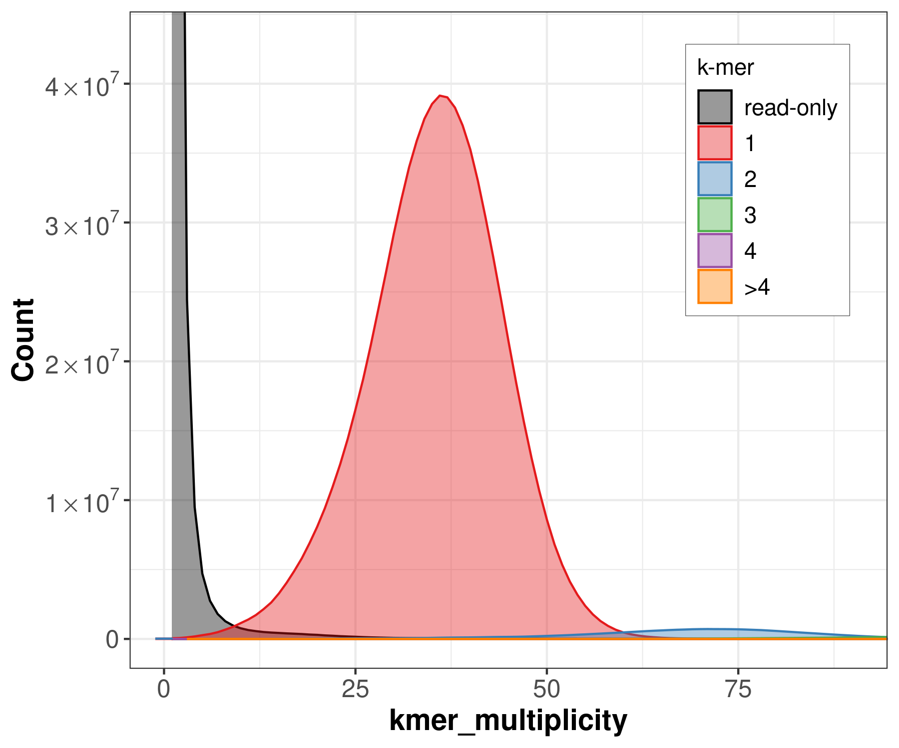
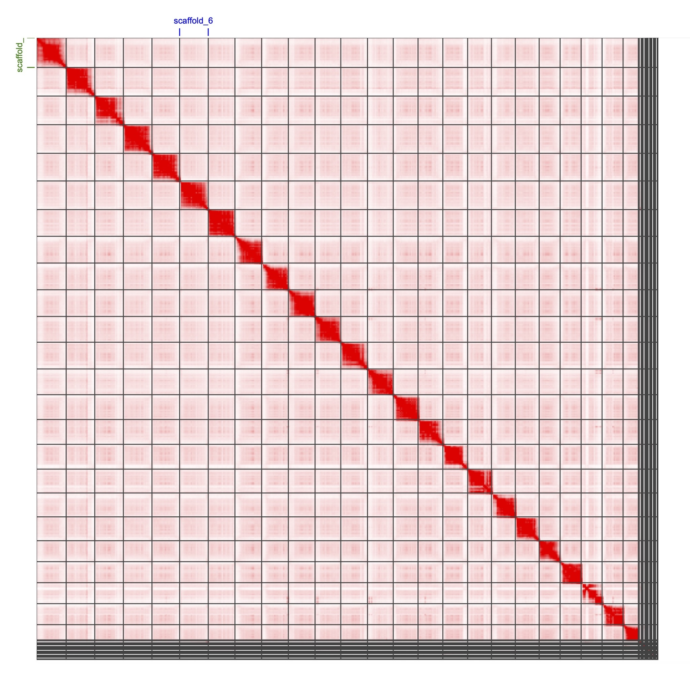
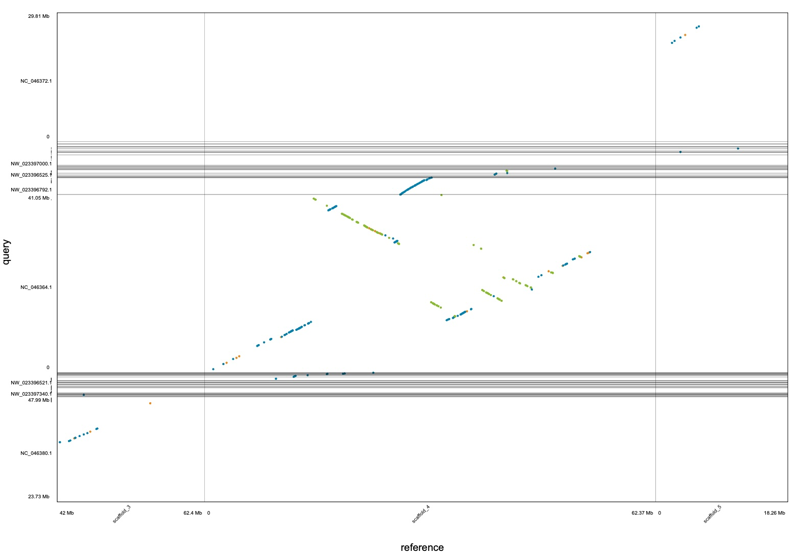

9 Assembly QC
9.1 Learning Objectives
| Learning Objectives: |
| Estimate the completeness, correctness, and contiguity of an assembled genome. |
In this chapter we’ll look at some QC metrics on our assembly. We’re going to look at the three C’s
- Contiguity: the degree to which the assembly is fragmented.
- Completeness: the fraction of the genome that is successfully assembled.
- Correctness: how many errors have been incorporated into the assembly.
9.2 Contiguity
In the early days of genome assembly, genomes were very highly fragmented. The fish Fundulus heteroclitus (the program mascot at this point) has a genome of around 1gb split across 24 chromosomes. In 2017, the first published genome had over 10,000 contigs, the largest of which was around 6mb. This was a very common state of affairs for genomes produced for organisms without vast research communities.
As we have seen, with current sequencing technologies and assembly algorithms we can regularly produce contigs on the scale of 10’s of megabases in a primary assembly, and reach chromosome-scale scaffolds with Hi-C data. But how can we compare contiguity among assemblies?
In those early days, the most commonly used statistic was N50. This is defined as the contig length for which at least 50% of the genome is found in contigs that length or longer. When genomes were highly fragmented, this was a somewhat useful metric both for comparing different assemblies of the same data and for communicating to others how relatively contiguous your genome was or wasn’t. Perhaps the biggest problem with it is that you could game it by tossing out tons of small scaffolds (many of which were probably real, but too small to be useful) and thereby increase your N50.
N50 is less useful now, because assemblies are regularly approaching chromosome-scale. The N50 number becomes very discontinuous because it’s almost certain that 50% of a newer genome will be in a contig that is 10s of megabases long, and with a chromosome-scale assembly it will be a function of the chromosome-length distribution more than anything else.
What is more important is information about how much of the genome remains in small contigs, many of which may fail to be scaffolded.
For this there are a bunch of other statistics.
We can generalize N50 to Nx, and calculate it for any percentage of the genome. We can create an Nx plot, and as proposed by Heng Li we can measure the area under the Nx curve, auN.
If we do multiple assemblies from the same organism, these numbers can help us understand which are more contiguous. At this point they are not helpful in a universal sense because they are so dependent on the chromosome size distribution of the organism.
How can we calculate them? Using Quast is an easy approach. We’ll do it here for both our unscaffolded and scaffolded haplotypes. It’s easy to do with loops because it’s not very computationally intensive. See the script scripts/05_assemblyQC/01_quast.sh:
module load quast/5.2.0
# loop over unscaffolded assemblies
ASSEMBLIES=../../results/04_assembly/hifiasm_fastas/
OUTDIR=../../results/05_assemblyQC/quast
mkdir -p ${OUTDIR}
for file in $(find ${ASSEMBLIES} -name "*fa")
do
base=$(basename ${file} ".fa")
echo ${base}
mkdir -p ${OUTDIR}/${base}
quast.py ${file} --threads 16 -o ${OUTDIR}/${base}
done
SCAFFOLDS=../../results/04_assembly/scaffoldedAssemblies/
# run on scaffolded haplotypes
for file in $(find ${SCAFFOLDS} -name "*fa")
do
base=$(basename ${file} ".fa")
echo ${base}
mkdir -p ${OUTDIR}/${base}
quast.py ${file} --threads 16 -o ${OUTDIR}/${base}
doneAnd we get a directory for each of the five assemblies:
ll results/05_assemblyQC/quast/total 20K
drwxr-xr-x 4 nreid cbc 5.5K Feb 20 19:00 Fdiaphanus_hap1
drwxr-xr-x 4 nreid cbc 5.5K Feb 20 18:58 Fdiaphanus_hap2
drwxr-xr-x 4 nreid cbc 5.5K Feb 20 19:01 Fdiaphanus_primary_contigs
drwxr-xr-x 4 nreid cbc 5.5K Feb 21 14:42 hap1_scaffolds_final
drwxr-xr-x 4 nreid cbc 5.5K Feb 21 14:44 hap2_scaffolds_finalWithin each directory we have a set of files:
ll results/05_assemblyQC/quast/Fdiaphanus_hap1/total 492K
drwxr-xr-x 2 nreid cbc 0 Feb 20 18:58 basic_stats
-rw-r--r-- 1 nreid cbc 53K Feb 20 19:00 icarus.html
drwxr-xr-x 2 nreid cbc 512 Feb 20 19:00 icarus_viewers
-rw-r--r-- 1 nreid cbc 2.5K Feb 20 19:00 quast.log
-rw-r--r-- 1 nreid cbc 385K Feb 20 19:00 report.html
-rw-r--r-- 1 nreid cbc 1.3K Feb 20 18:59 report.tex
-rw-r--r-- 1 nreid cbc 562 Feb 20 18:59 report.tsv
-rw-r--r-- 1 nreid cbc 1.2K Feb 20 18:59 report.txt
-rw-r--r-- 1 nreid cbc 1.1K Feb 20 18:59 transposed_report.tex
-rw-r--r-- 1 nreid cbc 562 Feb 20 18:59 transposed_report.tsv
-rw-r--r-- 1 nreid cbc 1021 Feb 20 18:59 transposed_report.txtThese files each contain a number of statistics, we are most interested in the report* files The html file can be opened in a browser, but to make a quick table we’re going to use a quick bash command:
paste $(find results/05_assemblyQC/quast/ -name "report.tsv" | sort) | cut -f 1,2,4,6,8,10This will output a table (reformatted into markdown for readability below):
| Assembly | Fdiaphanus_hap1 | Fdiaphanus_hap2 | Fdiaphanus_primary_contigs | hap1_scaffolds_final | hap2_scaffolds_final |
|---|---|---|---|---|---|
| # contigs (>= 0 bp) | 443 | 407 | 355 | 316 | 203 |
| # contigs (>= 1000 bp) | 443 | 407 | 355 | 316 | 203 |
| # contigs (>= 5000 bp) | 443 | 407 | 355 | 315 | 203 |
| # contigs (>= 10000 bp) | 443 | 407 | 355 | 315 | 203 |
| # contigs (>= 25000 bp) | 426 | 402 | 337 | 299 | 197 |
| # contigs (>= 50000 bp) | 346 | 371 | 269 | 220 | 166 |
| Total length (>= 0 bp) | 1356766612 | 1322093810 | 1360163710 | 1356787212 | 1322121710 |
| Total length (>= 1000 bp) | 1356766612 | 1322093810 | 1360163710 | 1356787212 | 1322121710 |
| Total length (>= 5000 bp) | 1356766612 | 1322093810 | 1360163710 | 1356785212 | 1322121710 |
| Total length (>= 10000 bp) | 1356766612 | 1322093810 | 1360163710 | 1356785212 | 1322121710 |
| Total length (>= 25000 bp) | 1356379238 | 1321982105 | 1359766148 | 1356420922 | 1321987005 |
| Total length (>= 50000 bp) | 1353457979 | 1320752580 | 1357178304 | 1353540531 | 1320754961 |
| # contigs | 443 | 407 | 355 | 316 | 203 |
| Largest contig | 42712095 | 35135847 | 59533521 | 65720995 | 64516896 |
| Total length | 1356766612 | 1322093810 | 1360163710 | 1356787212 | 1322121710 |
| GC (%) | 41.24 | 41.20 | 41.23 | 41.24 | 41.20 |
| N50 | 13657470 | 11733460 | 15584128 | 57079034 | 55365734 |
| N90 | 2452710 | 1933004 | 3312092 | 46132080 | 44556541 |
| auN | 15844887.4 | 13268193.1 | 20736238.0 | 54087839.3 | 54099759.9 |
| L50 | 31 | 36 | 24 | 12 | 12 |
| L90 | 114 | 141 | 91 | 22 | 22 |
| # N’s per 100 kbp | 0.00 | 0.00 | 0.00 | 1.52 | 2.11 |
We can see pretty clearly from this table that “primary_contigs” is most contiguous of the initial assemblies. This is expected, as it favors contiguity over phasing. “hap1” and “hap2” are less contiguous but still pretty good.
When we scaffold, however, we get huge jumps in all our stats. Note that we still have many scaffolds. Hap1 goes from 443 to 316 scaffolds. The N50 jumps from 13mb to 57mb. So we joined lots of large contigs. We incorporated some small contigs too, but many small ones remain unscaffolded. This is a pretty common state of affairs.
To be truly certain about how contiguous our genome assembly is, we’d want to have a karyotype telling us how many chromosomes there are.
9.3 Completeness
Next we’re going to ask how complete the genome is. We’ll use two approaches. One looks for genes expected to be present in the genome, and the other compares k-mers in the raw data to k-mers in the assembled genome.
9.3.1 BUSCO
BUSCO stands for Benchmarking Universal Single Copy Orthologs. The idea is that for a given branch on the tree of life, there will be a set of genes that can reasonably be expected to occur as single-copy genes in all, or almost all of the species. When we sequence a new genome from that group, we can look for those expected single-copy genes. The state of those genes can give us a sense of our genome assembly.
- If we are missing lots of BUSCO genes, it suggests our assembly is probably incomplete.
- If many BUSCO genes are fragmented, it suggests our assembly may be fragmented.
- If many BUSCO genes are duplicated, it suggests we may have erroneously incorporated haplotigs.
The genes themselves are determined through analyses of orthology across thousands of genomes that are published at OrthoDB, and they are collected by “lineage”. So how do we run BUSCO? Check out the script scripts/05_assemblyQC/02_busco.sh.
This script is an array job that loops over our initial assemblies (the scaffolded assemblies should have the same statistics).
module load busco/5.4.5
OUTDIR="../../results/05_assemblyQC/busco"
mkdir -p ${OUTDIR}
ASSEMBLYDIR=../../results/04_assembly/hifiasm_fastas/
ASSEMBLIES=($(find ${ASSEMBLYDIR} -name "*fa"))
GEN=${ASSEMBLIES[$SLURM_ARRAY_TASK_ID]}
BASE=$(basename ${GEN} ".fa")
DATABASE="/isg/shared/databases/BUSCO/odb10/lineages/actinopterygii_odb10"
busco \
-i ${GEN} \
-o ${OUTDIR}/${BASE} \
-l ${DATABASE} \
-m genome \
-c 12 \
-fNote that we use the actinoperygii (ray-finned fish) lineage, and that the database is present on Xanadu in a public directory. You can check that directory for more lineages, or you can output a taxonomically indented list with busco --list-datasets. If you want one that is not in that directory, just specify it and BUSCO will download it and use it. We could also have chosen the metazoa or vertebrata lineages, but these would have fewer BUSCO genes (because they are much broader taxonomic groups).
After running it, the main thing we’re interested in here is the short summary text file. We can print out all three of these summaries with
cat $(find results/05_assemblyQC/busco/ -name "short_summary.txt" | sort)Unfortunately the output is not in a tidy format, so it’s hard to quickly make a single table out of it as we did above.
For hap1:
C:98.0%[S:96.9%,D:1.1%],F:0.7%,M:1.3%,n:3640
3565 Complete BUSCOs (C)
3526 Complete and single-copy BUSCOs (S)
39 Complete and duplicated BUSCOs (D)
25 Fragmented BUSCOs (F)
50 Missing BUSCOs (M)
3640 Total BUSCO groups searched For hap2:
C:97.3%[S:96.3%,D:1.0%],F:0.7%,M:2.0%,n:3640
3542 Complete BUSCOs (C)
3504 Complete and single-copy BUSCOs (S)
38 Complete and duplicated BUSCOs (D)
26 Fragmented BUSCOs (F)
72 Missing BUSCOs (M)
3640 Total BUSCO groups searched For the primary assembly
C:98.0%[S:96.8%,D:1.2%],F:0.7%,M:1.3%,n:3640
3564 Complete BUSCOs (C)
3522 Complete and single-copy BUSCOs (S)
42 Complete and duplicated BUSCOs (D)
26 Fragmented BUSCOs (F)
50 Missing BUSCOs (M)
3640 Total BUSCO groups searched We can see there are 3,640 BUSCO genes for actinopterygii. The three assemblies are virtually identical, with 97.3-98% being found, and a low duplication rate of 1-1.2%.
If you wanted to dig into the duplications to see if they were legitimate or reflected assembly issues, there is a table listing all the BUSCO genes and where they were found in the genome.
For example:
grep "Duplicated" results/05_assemblyQC/busco/Fdiaphanus_hap1/run_actinopterygii_odb10/full_table.tsv | head# Busco id Status Sequence Gene Start Gene End Strand Score Length OrthoDB url Description
1123at7898 Duplicated h1tg000009l 3117127 3144839 - 3495.1 2357 https://www.orthodb.org/v10?query=1123at7898 filamin-B
1123at7898 Duplicated h1tg000084l 1418269 1469514 - 4064.5 2267 https://www.orthodb.org/v10?query=1123at7898 filamin-B
10556at7898 Duplicated h1tg000018l 24302395 24488546 + 1255.0 761
10556at7898 Duplicated h1tg000060l 30584592 30607426 - 1447.0 821
11000at7898 Duplicated h1tg000027l 14202410 14220372 - 1836.0 974 https://www.orthodb.org/v10?query=11000at7898 symplekin
11000at7898 Duplicated h1tg000379l 35322 53281 - 1836.0 974 https://www.orthodb.org/v10?query=11000at7898 symplekin
19326at7898 Duplicated h1tg000037l 30072669 30094293 + 1347.6 790 https://www.orthodb.org/v10?query=19326at7898 SEC24 homolog D, COPII coat complex component
19326at7898 Duplicated h1tg000083l 11948685 11971897 - 1173.2 747 https://www.orthodb.org/v10?query=19326at7898 SEC24 homolog D, COPII coat complex component
24967at7898 Duplicated h1tg000032l 7052149 7068031 - 797.9 514 https://www.orthodb.org/v10?query=24967at7898 Meprin A subunit
24967at7898 Duplicated h1tg000033l 19643097 19658311 + 827.1 473 https://www.orthodb.org/v10?query=24967at7898 Meprin A subunitIt would take a little investigating to understand these 5 duplicated genes, however.
9.3.2 Merqury
Next we’re going to run Merqury. Merqury will allow us to assess completeness by looking at the distribution of k-mers in our unassembled sequencing data compared to the ones found in the assembled genome. It will divide up the sequencing data k-mers into groups based on whether they are absent from the assembly, present in one copy, or present in more than one copy in the reference. Similarly to GenomeScope, it will fit a model to these distributions and try to estimate how many errors are found in the assembly and how much sequence data is missing.
To run Merqury, we first need to count the k-mers for our HiFi reads. We’ll use meryl for that. You could use the meryl k-mer count database we created before, but we’ll do it again here with script scripts/05_assemblyQC/03_meryl.sh. Remember meryl needs a substantial amount of memory!
meryl count k=21 memory=200 threads=24 ${INDIR}/*hifi*fastq.gz output ${OUTDIR}/HIFI.merylOnce we’ve got the database, we can run merqury. Check out script scripts/05_assemblyQC/04_merqury.sh. It’s an array script. Each task doesn’t need all that much in the way of resources. It does require R to generate some plots.
module load R/4.2.2
module load merqury/1.3
module load meryl/1.4.1
# input/output. prefix everything with $(pwd) so we can run merqury from the output directory
MERYLDIR=$(pwd)/../../results/05_assemblyQC/meryl/HIFI.meryl
# get an assembly file
ASSEMBLYDIR=$(pwd)/../../results/04_assembly/hifiasm_fastas/
ASSEMBLIES=($(find ${ASSEMBLYDIR} -name "*fa"))
GEN=${ASSEMBLIES[$SLURM_ARRAY_TASK_ID]}
# extract file name base to use as prefix
BASE=$(basename ${GEN} ".fa")
# run merqury from the output directory because it doesn't allow setting output location (!?!)
OUTDIR=../../results/05_assemblyQC/merqury/${BASE}
mkdir -p ${OUTDIR}
cd ${OUTDIR}
# run meryl
merqury.sh ${MERYLDIR} ${GEN} ${BASE}It’s a pretty simple script. It produces lots of results files. We’ll first look at the completeness stats:
cat $(find results/05_assemblyQC/merqury/ -name "*completeness*" | sort)Fdiaphanus_hap1 all 872456074 880490278 99.0875
Fdiaphanus_hap2 all 867309249 880490278 98.503
Fdiaphanus_primary_contigs all 872101987 880490278 99.0473Per the docs, the columns are:
- Assembly
- k-mer set used for measuring completeness - all = read set (This gets expended with hap-mers later)
- solid k-mers in the assembly
- Total solid k-mers in the read set
- Completeness (%)
“solid” k-mers are those with low frequency probable errors filtered out.
So this suggests our assemblies are ~99% complete, with hap2 looking a little worse. This is contingent on there being little to no bias in which parts of the genome are sequenced, so we should be aware that sequencing bias can distort this.
We also get some nice figures. The one below shows the read k-mers broken out by how frequently they occur in the assembly. You can see the spike of rare k-mers found only in the reads. Those will be errors, but also a low peak for k-mers that appear twice in the assembly. As you might expect, the peak there is about 2x the peak of the single-copy k-mers. The figure doesn’t really show higher copy number k-mers as it is truncated in the 85x range.

9.4 Correctness
Our last criterion here is correctness. There are two main components here, base-level correctness and assembly level. In the first component we want to know if the actual sequences are accurate at the base level. Sequencing data with higher error rates can produce assemblies with base level errors that can benefit from polishing. In the second we want to know if whole contigs or scaffolds have been joined incorrectly. We may have the sequences themselves mostly right, but the ordering and orientation of contigs, or more rarely the initial assembly itself, may have joined sequences incorrectly.
9.4.1 Merqury
merqury provides a relatively straightforward evaluation of base-level accuracy, again from k-mers. We’ve already run it, so we’ll just have a look at those results here. The relevant files end with suffix .qv. There are two for each assembly. One gives the assembly-wide average, the second gives the value for each sequence. We’ll just grab the averages (the grep Fdiaph does that here):
cat $(find results/05_assemblyQC/merqury/Fdiaph* -name "*qv" | sort) | grep FdiaphFdiaphanus_hap1 20246 1356757752 61.4838 7.10593e-07
Fdiaphanus_hap2 19536 1322085670 61.5264 7.03655e-07
Fdiaphanus_primary_contigs 19284 1360156610 61.7061 6.75137e-07Per the docs, the columns are:
- Assembly of interest. Both is the combination of the above two.
- Total (present) k-mers uniquely found only in the assembly
- Total (present) k-mers found in the assembly
- QV (phred-scaled error rate)
- Error rate
So we can see that in our three assemblies we can expect 6-7 errors per 10 million bases. Not too bad!
Note that it is possible to provide two assemblies at once like this merqury.sh ${MERYLDIR} ${GENOME1} ${GENOME2} ${BASE} and it will also provide a spectrum plot reflecting that.
9.4.2 Juicer/Juicebox
There are a number of ways we could evaluate assembly-level accuracy. We could compare our assembly to another one from the same species that we had high confidence for. We wouldn’t be able to distinguish between structural variation and assembly errors though. We could also use a genetic map, where we use the frequency of recombination between genomic regions to figure out if we had made large-scale assembly errors. This would require a decent-sized set of offspring in a single family, or a large pedigree to do well, and it would still leave uncertainty about whether apparent errors in our focal genome were true structural variants.
In this section, we’ll re-use our Hi-C data to visualize a contact map on our scaffolded assembly. A contact map is a visual presentation (a heatmap) of the frequency of cross-linked DNA across the genome from our Hi-C dataset. Spoiler alert, we won’t observe any obvious assembly errors in our scaffolded assembly. This is possibly because YaHS works pretty well and we are visualizing the data it used for scaffolding.
There are three steps here:
- Align the Hi-C data to the assembly.
YaHShas already effectively done this, and it provides a script to reformat it so it can be used in the next step, rather than doing it again. - Run
juicer(thepremodule) to prepare the Hi-C alignments for visualization. - Visualize the data locally using
juicebox, a GUI.
There’s a lot you can do with juicebox, but we’re just going to get to the point of visualizing the contact map.
9.4.2.1 Step 1
The first step is in script scripts/05_assemblyQC/05_juicerPrep.sh. It’s an array set up to run once for each haplotype. The commands are taken from the YaHS documentation:
INDIR=../../results/04_assembly/scaffoldedAssemblies/
CONTIGDIR=../../results/04_assembly/hifiasm_fastas/
OUTDIR=../../results/05_assemblyQC/contactMaps
mkdir -p ${OUTDIR}
HAPS=(1 2)
hap=${HAPS[$SLURM_ARRAY_TASK_ID]}
# convert bin file created by yahs
# "juicer pre" is a script provided by yahs
BIN=${INDIR}/hap${hap}.bin
AGP=${INDIR}/hap${hap}_scaffolds_final.agp
FAI=${CONTIGDIR}/Fdiaphanus_hap${hap}.fa.fai
(juicer pre ${BIN} ${AGP} ${FAI} |
sort -k2,2d -k6,6d -T ./ --parallel=8 -S32G |
awk 'NF' > ${OUTDIR}/hap${hap}_alignments_sorted.txt.part) &&
(mv ${OUTDIR}/hap${hap}_alignments_sorted.txt.part ${OUTDIR}/hap${hap}_alignments_sorted.txt)The .bin file contains the Hi-C mapping information created by YaHS. It’s mapped to the contigs in our assemblies, but we want to visualize the scaffolds, so it needs to be converted. The .agp file from YaHS contains the information needed to translate from the contig coordinates to the scaffold coordinates. The .fai file just contains the scaffold names and lengths.
Confusingly the command juicer pre is provided by YaHS, but shares the same name and submodule name as the java program we’ll run in the next step. Then next two lines sort by columns 2 and 6 and remove any empty lines.
9.4.2.2 Step 2
The next step formats the data so that it can be loaded up into juicebox and visualized. The script is scripts/05_assemblyQC/06_juicerMap.sh.
The script looks like this (as recommended by the YaHs docs):
module load YaHS/1.2.2
module load juicer/1.22.01 # sets $JUICER variable
module load samtools/1.20
SCAFFOLDS=../../results/04_assembly/scaffoldedAssemblies/
OUTDIR=../../results/05_assemblyQC/contactMaps
HAPS=(1 2)
hap=${HAPS[$SLURM_ARRAY_TASK_ID]}
# generate "chrom.sizes" file
samtools faidx ${SCAFFOLDS}/hap${hap}_scaffolds_final.fa
FAI=${SCAFFOLDS}/hap${hap}_scaffolds_final.fa.fai
cut -f 1-2 ${FAI} >${OUTDIR}/hap${hap}_scaffolds_final.chrom.sizes
# run juicer to produce .hic file
(java -jar -Xmx32G ${JUICER} pre --threads 12 \
${OUTDIR}/hap${hap}_alignments_sorted.txt \
${OUTDIR}/hap${hap}_out.hic.part \
${OUTDIR}/hap${hap}_scaffolds_final.chrom.sizes) &&
(mv ${OUTDIR}/hap${hap}_out.hic.part ${OUTDIR}/hap${hap}_out.hic)There are a couple things happening here. First, we need a chrom.sizes file (the first two columns of a .fai file) for our scaffolded assembly. So we use samtools to generate the .fai index, and then pull out the first two columns.
Next, we run juicer, a java program. ${OUTDIR}/hap${hap}_alignments_sorted.txt is the input generated in the last step. ${OUTDIR}/hap${hap}_out.hic.part is the name of the output file. then we provide the chrom.sizes file. At the end the output file is renamed.
${OUTDIR}/hap${hap}_out.hic is what we’ll load into juicebox.
9.4.2.3 Step 3
Now we need to load the .hic file into juicebox. To do this I recommend you follow the Quick Start instructions here. To actually load the .hic file, you should either download it (it’s 2GB for this genome) or connect your file system to Xanadu to access it. It loads relatively quickly from Xanadu. When you do File -> Open, select Local... to access your file system (or Xanadu’s if it’s connected).
Once you’ve got it loaded up, you can zoom in and have a look at specific scaffolds, or export figures like this.

There are lots of things you can do with juicebox, including editing your assembly.
9.4.3 Genome comparison
The last thing we’ll do here is visualize a pairwise genome alignment. We’ll generate a dotplot showing the broad-scale alignment of Fundulus diaphanus and Fundulus heteroclitus. There are tons of ways to align whole genomes and analyze or visualize results. We’ll demo a pretty simple one here that is suitable for quick exploratory work.
We’re going to use the package MUMmer to do the whole genome alignment, and a git repository called Dot to do an interactive visualization of a dot plot.
See script scripts/05_assemblyQC/07_mummer.sh.
module load MUMmer/4.0.2
# in/out dirs
OUTDIR=../../results/05_assemblyQC/nucmer
mkdir -p ${OUTDIR}
# Fdiaph genome
FDIAPH=../../results/04_assembly/scaffoldedAssemblies/hap1_scaffolds_final.fa
# download Fhet genome
wget -P ${OUTDIR} https://ftp.ncbi.nlm.nih.gov/genomes/all/GCF/011/125/445/GCF_011125445.2_MU-UCD_Fhet_4.1/GCF_011125445.2_MU-UCD_Fhet_4.1_genomic.fna.gz
gunzip ${OUTDIR}/GCF_011125445.2_MU-UCD_Fhet_4.1_genomic.fna.gz
FHET=${OUTDIR}/GCF_011125445.2_MU-UCD_Fhet_4.1_genomic.fna
# run nucmer to generate the alignment
nucmer --delta="${OUTDIR}" -t 16 ${FDIAPH} ${FHET}We’re running the script nucmer here (which wraps some MUMmer functions). It’s very simple. The main output file will be called out.delta by default.
Next we’ll post-process the output for Dot using script scripts/05_assemblyQC/08_dot.sh.
# in/out dirs
OUTDIR=../../results/05_assemblyQC/nucmer
cd ${OUTDIR}
# clone Dot repository
git clone https://github.com/MariaNattestad/dot.git
# remove shebang line (it points to system python)
sed -i '1d' dot/DotPrep.py
# prep data for display:
python3 dot/DotPrep.py --delta out.delta --out dotplotIf this errors out for you, you may need to pip install numpy or use a conda environment with that python package installed.
this will produce the files:
-rw-r--r-- 1 nreid cbc 145M Mar 1 09:26 dotplot.coords
-rw-r--r-- 1 nreid cbc 353K Mar 1 09:26 dotplot.coords.idx
-rw-r--r-- 1 nreid cbc 13M Mar 1 09:26 dotplot.uniqueAnchorFiltered_l10000.delta.gzWe can then load those into a webserver at https://dot.sandbox.bio/. The files are not that big, so you can download them. Alternatively you can connect Xanadu to your local filesystem to access them directly.
You can click and drag to create a window to zoom into, or double-click to zoom out. You can see that the overall structure of the chromosomes is pretty well preserved. The Fhet genome was assembled with high error rate PacBio CLR data, so it is not quite as good as our Fdiaph genome.
One interesting feature is the Fhet sequence NC_046364.1. You should be able to see that it is the least colinear chromosome.

It so happens that this is the sex chromosome in Fhet (this is unpublished data). In that species, the sex chromosomes are XY, but are not highly degenerate. This means the X and Y still share most sequence. There is, however, a very large region where they do not recombine, and that region has accumulated lots of sequence divergence between X and Y. It looks like there has probably also been lots of inversion activity. The individual Fhet used in this assembly is a male, and at least some of this sequence is Y chromosomal, but with CLR data it’s very hard to do a phased assembly, so it’s not really clear how much of this chromosome is X and how much is Y. It’s probably a mixture. Fdiaph almost certainly has genetic sex determination, but there hasn’t been any work yet trying to uncover sex chromosomes.
9.5 Conclusion
This concludes our module on genome assembly. We’ve covered the most important steps in QC’ing our data, assembling the genome, and QC’ing the assembly. Remember that data and methods in this area are changing very rapidly right now, so don’t treat this material as fixed, but as more of a conceptual guide for how to approach this topic.